한줄 요약 — TNES는 0.2m 격자에 지형 의미·경사·단차를 누적하고 궤도·차체 사이의 주행성 비용으로 Hybrid A*를 확장해 대형 굴착기를 안내한다. 오프라인 계획 성공률을 33.3%에서 82.6%로 높이고 평균 약 10cm 추종을 달성했으며, TNS 주행 뒤 AES 굴착까지 최소 개입으로 연결했다.
1.연구 배경 및 동기
차선 없는 복합 건설현장에서 험지 이동과 굴착을 하나의 시스템으로 연결
굴착기는 암석더미, 구덩이, 급경사, 물웅덩이와 변하는 토사를 통과한다. 카메라만 쓰면 기하 위험을, LiDAR만 쓰면 철근·물 같은 의미 위험을 놓친다. 대형 장비의 폭·등판능력·연산예산을 반영한 주행성 판단이 필요하다.
논문은 RGB와 LiDAR로 연속 주행성 점수를 만드는 TNS를 49톤 굴착기에서 검증하고, 6.5톤 복합현장에서는 이를 AES와 결합한 TNES로 확장한다. 목표는 좌표를 받은 장비가 현장을 이동해 굴착하고 지정 위치로 돌아오는 연속 활동이다.
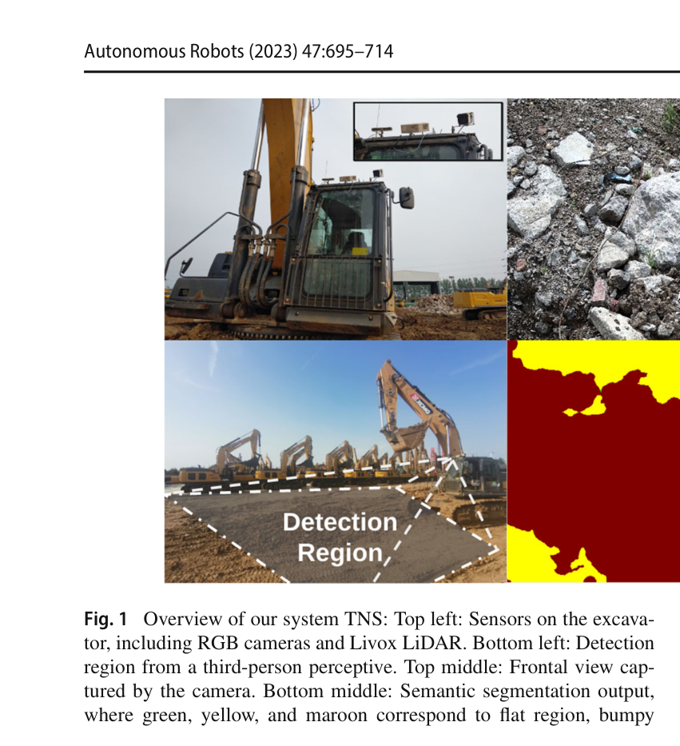
원문 Figure 1 · PDF p.3 — Fig. 1 Overview of our system TNS: Top left: Sensors on the excava- tor, including RGB cameras and Livox LiDAR. Bottom left: Detection region from a third-person perceptive. Top middle: Frontal view cap- tured by the camera. Bottom middle: Semantic segmentation output, where green, yellow, and maroon correspond to flat region, bumpy
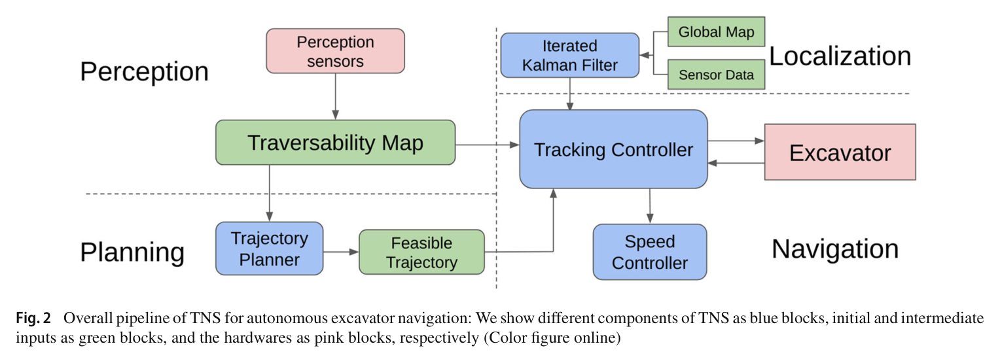
원문 Figure 2 · PDF p.5 — Fig. 2 Overall pipeline of TNS for autonomous excavator navigation: We show different components of TNS as blue blocks, initial and intermediate inputs as green blocks, and the hardwares as pink blocks, respectively (Color figure online)
선행 연구의 한계
기존 off-road 연구는 소형 로봇과 비교적 매끄러운 경로에 집중해 대형 굴착기 제약을 충분히 반영하지 않았다.
RGB만 쓰면 시각적으로 비슷한 지형을, LiDAR만 쓰면 물·철근 같은 의미 위험을 놓친다.
일반 Hybrid A*는 거리와 전후진·회전 비용만 보아 주행성이 낮은 지면으로 경로를 만들 수 있다.
30분 영상과 669개 RGB 주석, 7개 지형·주행성 클래스로 구성된 Complex Worksite Terrain(CWT) 데이터셋을 제시했다.
Fast-SCNN 의미분할과 LiDAR 경사·단차를 장비 사양 기반 규칙으로 융합하는 10 Hz 주행성 격자지도를 만들었다.
주행성 비용을 Hybrid A*의 궤도 및 차체 하부 영역에 반영하고 반복 칼만필터 위치추정·경로추종과 결합한 TNS를 49톤 굴착기에서 검증했다.
TNS와 AES를 결합한 TNES를 6.5톤 굴착기와 복합 건설현장에 배치해 이동–굴착 연속작업을 최소한의 사람 개입으로 시연했다.
2.방법론 및 시스템 구성
TNS 입력은 RGB 영상, 3D LiDAR 점군, RTK 또는 지도 기반 위치다. Fast-SCNN이 terrain class를 분할하고 카메라–LiDAR 보정으로 각 의미를 점군과 0.2m elevation grid에 투영한다. 각 셀은 최신 점의 평균높이, 갱신시각, 경사, 단차, 의미를 저장한다. 경사와 단차가 장비 임계값을 넘으면 금지하고, 안전 범위에서는 의미와 기하를 연속 점수로 융합한다.
위치는 전역 점군지도와 LiDAR point-to-plane 잔차, IMU를 반복 칼만필터로 결합한다. 개선 Hybrid A*는 경로 구간에서 두 궤도와 궤도 사이가 덮는 면적의 평균 주행성으로 이동비용을 가중한다. 추종기는 heading·cross-track error로 좌우 궤도 명령을, 속도 PI 제어기는 종방향 속도를 만든다. TNES 단계에서는 이 주행 파이프라인이 AES의 굴착 목표·작업계획과 연결된다.
처리 파이프라인
1
RGB 지형 의미분할
Fast-SCNN이 flat, bumpy, rock pile, water, water–dirt mixture, vehicle, obstacle의 CWT 의미를 픽셀별 예측한다.
2
의미–점군 투영
timestamp와 보정행렬로 대응 LiDAR 점을 찾고 각 점의 지형 label을 격자 셀에 누적한다.
3
경사·단차 계산
셀 주변 PCA의 최소 고유벡터로 surface normal과 slope를 구하고 더 넓은 7×7 이웃의 최대 높이차로 step height를 계산한다.
4
장비 제약 주행성 융합
암석·차량·장애물·물은 금지하고 flat 안전영역은 최고점수로 두며, 나머지는 경사·단차 점수를 사용한다.
원문 Figure 3 · PDF p.5 — Fig. 3 Overview of the perception module in TNS: Our system takes RGB images and point clouds as inputs to infer traversability. We extract semantic information using segmentation and associate terrain labels with point clouds, as shown in A (top). We extract geometric informa-
3.핵심 기술
CWT 의미체계와 경량 Fast-SCNN
CWT는 지면을 flat, bumpy, rock pile, water, water–dirt mixture와 차량·장애물로 나눠 주행 가능성과 연결한다. Fast-SCNN은 RTX 2060급 현장 연산예산을 고려한 선택이다.
영상 30분, 주석 669장, 해상도 1920×1080
7개 CWT class
Fast-SCNN 1.45M parameters
CWT mIoU 54.77, mAcc 68.75, 7.45 GFLOPS
기하–의미 상호보완 주행성 격자
PCA slope는 국소 기울기, 1.4m step height는 넓은 높이변화를 본다. 의미는 물·철근을, 기하는 급경사·흙더미를 보완해 한쪽이 불확실해도 보수적으로 위험을 잡는다.
격자 0.2m, 최근점 평균높이 저장
8-neighbor slope와 7×7 step height
49톤 장비 위험경사 35도·안전경사 10도
경사 임계에서 유도한 h_cri 0.35m, h_safe 0.10m
저시야각 LiDAR를 위한 전역지도 정합 위치추정
빠른 cabin swing은 저시야각 LiDAR SLAM을 무너뜨릴 수 있다. TNS는 전역지도 point-to-plane 잔차를 IMU와 반복 칼만필터로 융합하고, 6.5톤 현장에서는 GPS 고도 드리프트도 지도 정합으로 줄인다.
IKFoM 반복 칼만필터
LiDAR–IMU extrinsic known
전역 map point-to-plane residual
RTK 고도 약 20cm 변동보다 일관된 round-trip 높이 추정
굴착기 footprint를 반영한 주행성 경로계획
경로 조각에서 두 궤도와 그 사이가 덮는 면적을 따로 평가해 지면비용을 합친다. Hybrid A*로 급격한 방향변환을 줄이지만 임의 지형에서 항상 부드러운 경로를 보장하지는 않는다.
전후진·회전 extra cost 유지
track area At와 underbody area Au 분리
49톤 설정 track 간 거리 2.75m
planning occupancy threshold 0.6
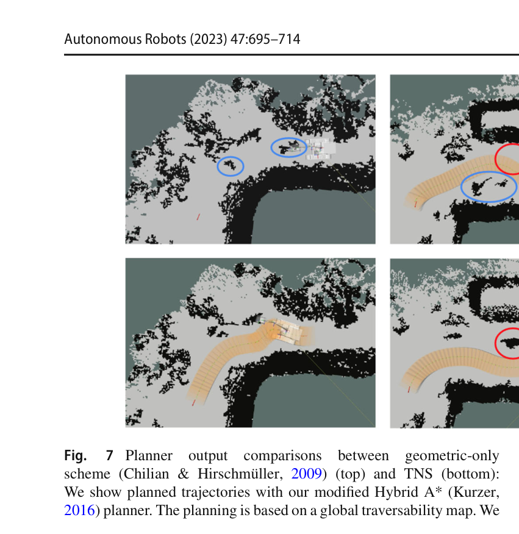
원문 Figure 7 · PDF p.13 — Fig. 7 Planner output comparisons between geometric-only scheme (Chilian & Hirschmüller, 2009) (top) and TNS (bottom): We show planned trajectories with our modified Hybrid A* (Kurzer, 2016) planner. The planning is based on a global traversability map. We
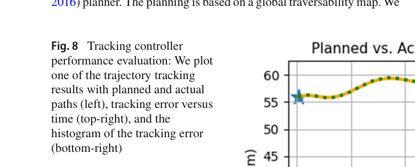
원문 Figure 8 · PDF p.13 — Fig. 8 Tracking controller performance evaluation: We plot one of the trajectory tracking results with planned and actual paths (left), tracking error versus time (top-right), and the histogram of the tracking error (bottom-right)
4.실험 결과
실험 환경·장비·데이터
첫 현장은 49톤 XCMG XE490D, Livox Mid-100, HIK 카메라, Huace RTK를 사용했다.
연산기는 i7-10875H, RAM 16GB, RTX 2060 6GB 노트북이다.
둘째 현장은 6.5톤 XCMG XE75D, Livox Mid-70 3대, HIK 카메라 4대, Huace GPS와 RTX 2060을 사용했다.
RELLIS-3D에서 기존 주행성 방법과 비교하고 실제 현장에서 planning·tracking·runtime을 평가했다.
둘째 현장에서는 CWT 7개 지형 class에 작업장 객체 12개를 더한 128장 주석을 수집하고 TNS를 AES와 통합했다.
실험 프로토콜
RELLIS-3D 의미 ground truth를 주행 가능 0/불가 1로 변환해 traversable·non-traversable accuracy, mAcc, all accuracy, ROC-AUC, MSE를 계산했다.
TNS 지도와 geometric-only 지도를 각각 Hybrid A*에 넣고 90회가 넘는 무작위 start–goal 쌍에서 충돌 없는 경로 생성 성공률을 비교했다.
실차 경로는 straight, small turn, sharp turn으로 나눠 목표 도달, 총 길이, 평균·최소 tracking error를 기록했다.
주행성 map traversable/non-traversable accuracy, mean accuracy, all accuracy, ROC-AUC, MSE
무작위 start–goal의 충돌 없는 planning success rate
경로 유형별 총거리와 tracking error
모듈별 runtime과 map update rate
RTK와 map-based localization의 round-trip 높이 일관성
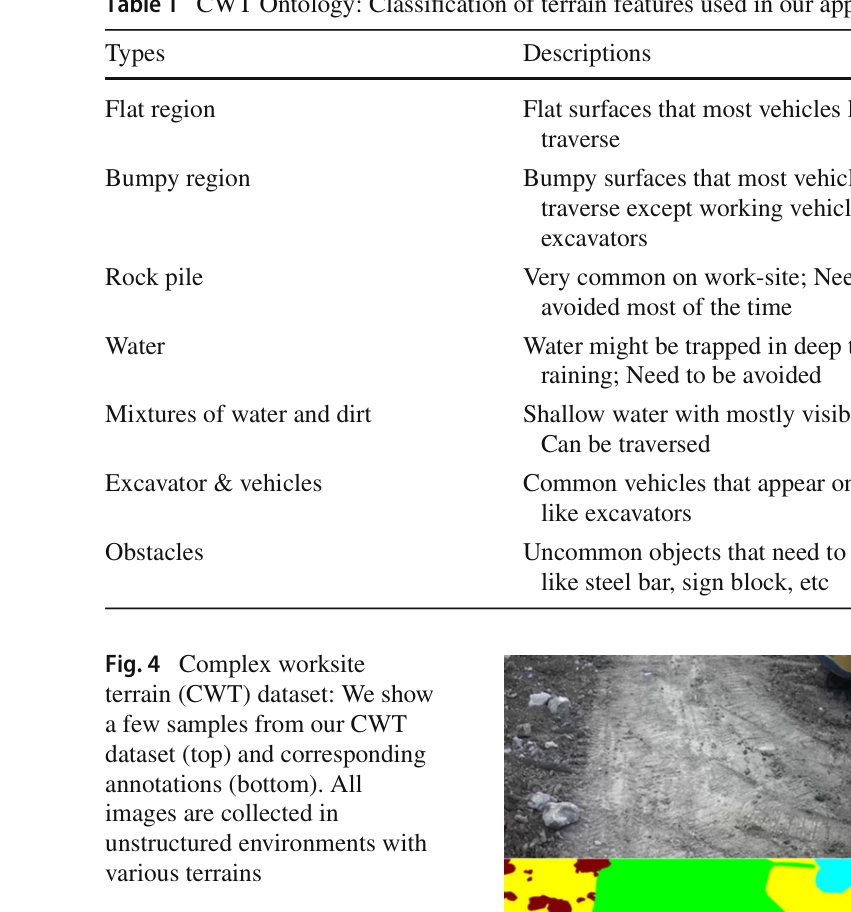
원문 Figure 4 · PDF p.9 — Fig. 4 Complex worksite terrain (CWT) dataset: We show a few samples from our CWT dataset (top) and corresponding annotations (bottom). All images are collected in unstructured environments with various terrains
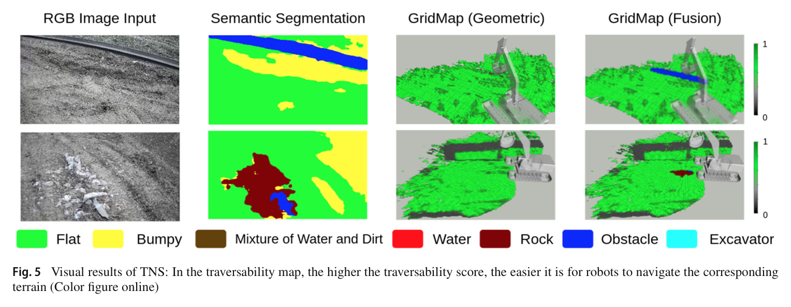
원문 Figure 5 · PDF p.11 — Fig. 5 Visual results of TNS: In the traversability map, the higher the traversability score, the easier it is for robots to navigate the corresponding terrain (Color figure online)
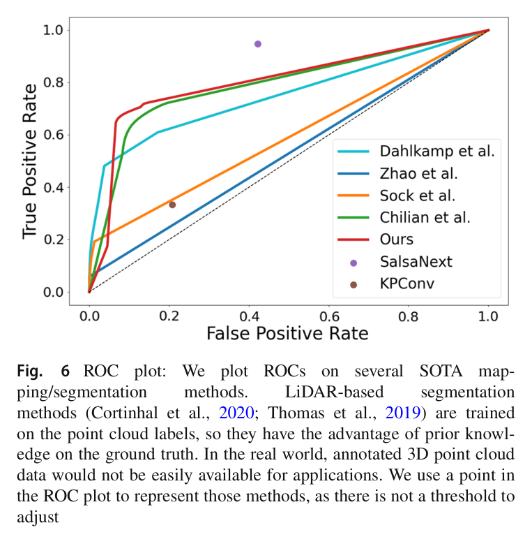
원문 Figure 6 · PDF p.12 — Fig. 6 ROC plot: We plot ROCs on several SOTA map- ping/segmentation methods. LiDAR-based segmentation methods (Cortinhal et al., 2020; Thomas et al., 2019) are trained on the point cloud labels, so they have the advantage of prior knowl- edge on the ground truth. In the real world, annotated 3D point cloud data would not be easily available for applications. We use a point in the ROC plot to represent those methods, as there is not a threshold to adjust
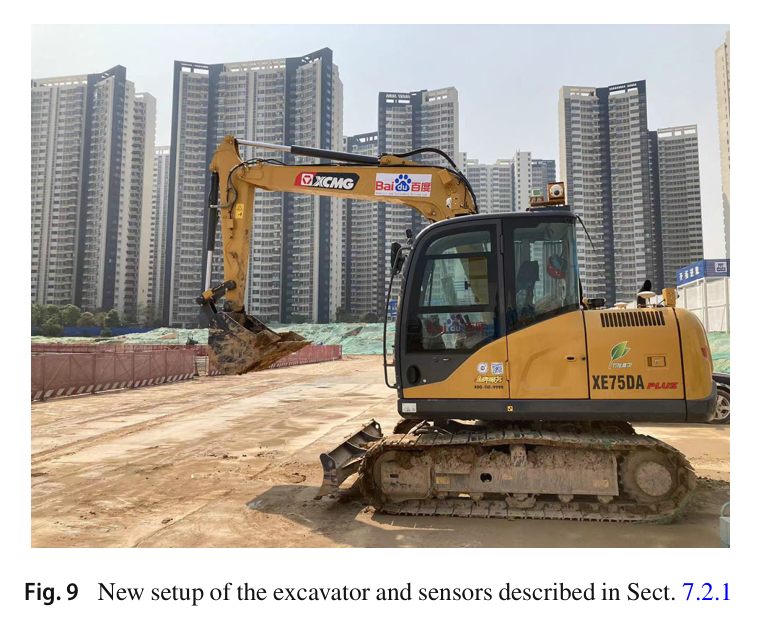
원문 Figure 9 · PDF p.14 — Fig. 9 New setup of the excavator and sensors described in Sect. 7.2.1
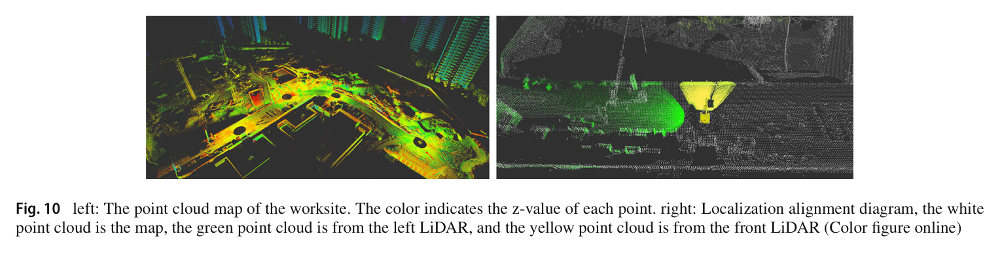
원문 Figure 10 · PDF p.15 — Fig. 10 left: The point cloud map of the worksite. The color indicates the z-value of each point. right: Localization alignment diagram, the white point cloud is the map, the green point cloud is from the left LiDAR, and the yellow point cloud is from the front LiDAR (Color figure online)
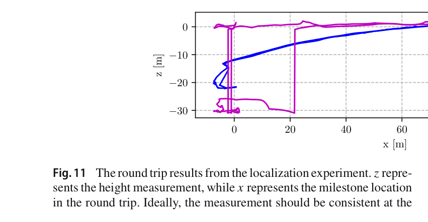
원문 Figure 11 · PDF p.15 — Fig.11 The round trip results from the localization experiment. z repre- sents the height measurement, while x represents the milestone location in the round trip. Ideally, the measurement should be consistent at the
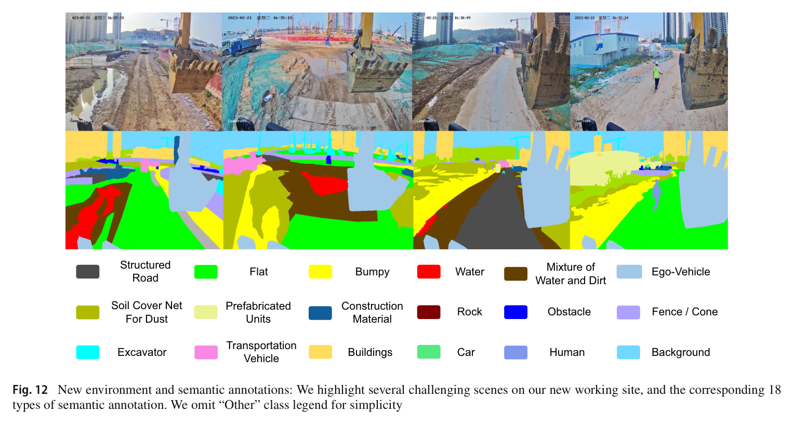
원문 Figure 12 · PDF p.16 — Fig. 12 New environment and semantic annotations: We highlight several challenging scenes on our new working site, and the corresponding 18 types of semantic annotation. We omit “Other” class legend for simplicity
핵심 결과 해석
RELLIS-3D에서 TNS는 traversable/non-traversable accuracy 71.77/91.05%, mAcc 81.41%, all accuracy 85.70%, AUC 0.803, MSE 0.106으로 비교군 중 가장 균형 잡힌 결과를 냈다. 기존 방법보다 mAcc가 4.17–30.48% 높고 MSE는 13.8–71.4% 낮았다. 의미분할 자체는 CWT에서 mIoU 54.77에 그쳤지만 기하 융합이 최종 주행성 예측을 보완했다.
90회가 넘는 무작위 계획에서 TNS 지도의 충돌 없는 경로 생성 성공률은 82.6%, geometric-only는 33.3%였다. 실제 49톤 장비의 straight 9개, small turn 8개, sharp turn 8개 경로는 모두 목표에 도달했고 평균 tracking error가 약 0.06–0.104m 범위였다. 대표 50m 경로는 102초, 평균 0.5m/s로 주행하며 최대오차 약 14cm, 대부분 약 6cm를 보였다.
주행성 map은 segmentation 75.4ms, 투영 42.3ms, 기하 계산 22.1ms 평균으로 10 Hz 갱신을 보고했다. 6.5톤 TNES는 지도 기반 위치추정과 이동–굴착 연속작업을 시연했지만 굴착 성공률·시간·오차는 별도 정량화하지 않았다. 정량 우위는 TNS 지도·주행에서, TNES 통합은 기능 시연에서 확인된다.
반복되는 흙더미·구덩이와 제한 FOV 때문에 일반 SLAM을 시도했을 때 퇴화와 매우 낮은 정확도가 발생했다.
RTK는 고도 약 20cm 드리프트로 같은 위치 셀의 높이를 다르게 기록한다.
Hybrid A*를 조정해도 임의의 거친 지형에서 항상 부드럽고 안전한 경로를 보장할 수 없다.
안전 문제 때문에 사람과 다른 장비가 많이 움직이는 상황을 폭넓게 시험하지 못했다.
5.한계 및 향후 연구
현재 한계
49톤과 6.5톤 두 기종, 제한된 두 현장만 평가해 다른 굴착기 크기와 지형으로의 일반화가 제한된다.
작업자와 다른 장비가 많은 동적 현장은 안전상 충분히 시험하지 못했고 충돌 회피·상호작용 모듈도 통합되지 않았다.
RTK 고도 드리프트, 먼지 LiDAR 잡음, 반복 지형의 SLAM 퇴화가 지도 정확도를 계속 제한한다.
RTX 2060급 연산예산 때문에 더 무거운 학습 기반 인지·내비게이션을 사용하지 못했다.
TNES 이동–굴착 통합 시연에는 굴착 성공률, 작업시간, 사람 개입 횟수의 정량 평가가 없다.
향후 연구
RTK·LiDAR·카메라를 더 안정적으로 융합해 반복 지형과 먼지에서도 고도·자세 일관성을 유지한다.
굴착기 크기·궤도 폭·질량중심을 활용해 작은 장애물을 궤도 사이로 넘는 인간 작업자 수준의 planner를 개발한다.
다양한 지형과 장비 등급에서 임계값과 계획 성능을 재검증한다.
사람·차량 인식, 충돌회피, 인간–기계 상호작용을 결합해 다기계 협업 현장으로 확장한다.
6.한마디로 정리
핵심 방법은?
RGB 의미와 LiDAR 경사·단차를 장비 사양에 맞춘 연속 주행성 격자로 융합하고, 전역지도 위치추정·주행성 Hybrid A*·궤도추종을 AES에 연결한다.
핵심 결과는?
주행성 mAcc 81.41%, 계획 성공률 82.6%, 49톤 실차 평균 약 10cm 추종을 달성하고 6.5톤 TNES의 주행–굴착 연속작업을 시연했다.
한계는?
동적 작업자·장비 현장과 TNES 굴착 정량 검증이 부족하며 먼지·RTK 고도·반복지형 측위가 남은 위험이다.
#시스템통합·현장실증#측위·매핑#환경인식#작업·궤적계획#RGB-LiDAR 주행성 지도#전역지도 정합#반복 칼만필터#Hybrid A*#AES 통합
나의 의견 / 우리 연구와의 연관성
TNES는 팔 제어만큼 차체가 안전한 정차 위치에 도달하는 능력이 중요함을 보여 준다. RGB–LiDAR 상호보완, 장비 폭·등판각 격자, 궤도 footprint 비용은 건설기계에 맞는 필드로봇 설계다.
후속 시스템은 정적 지도에 사람·차량 미래점유, 전복 안정도, 지형변화를 추가하고 정지·우회·복구까지 평가해야 한다.
정차 위치와 굴착 작업영역을 동일 전역지도에서 관리하면 이동–작업 상태전환이 명확해진다.
의미–기하 융합은 물·철근과 급경사·단차처럼 서로 다른 현장 위험을 상호보완한다.
경로 비용은 중심점이 아니라 좌우 궤도와 차체 하부 면적을 평가해야 대형 장비에 적합하다.
현장 배치에는 동적 객체 예측, 전복 위험, 먼지 강건 측위, 다기계 우선순위가 추가돼야 한다.
7.전체 그림·표
본문 핵심 위치에 배치하지 않은 원문 Figure와 Table을 원문 페이지 순서로 수록한다.
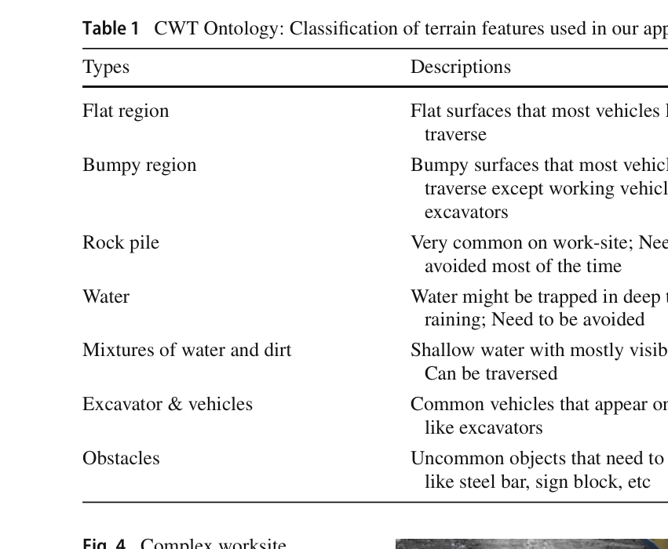
원문 Table 1 · PDF p.9 — Table 1 CWT Ontology: Classification of terrain features used in our approach
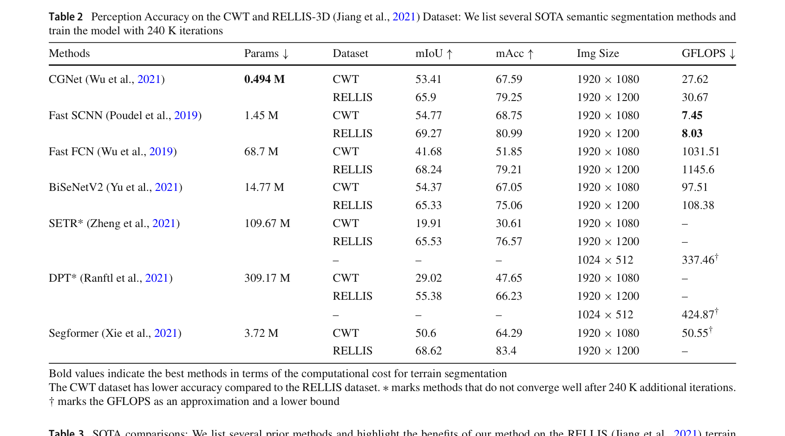
원문 Table 2 · PDF p.10 — Table 2 Perception Accuracy on the CWT and RELLIS-3D (Jiang et al., 2021) Dataset: We list several SOTA semantic segmentation methods and train the model with 240 K iterations
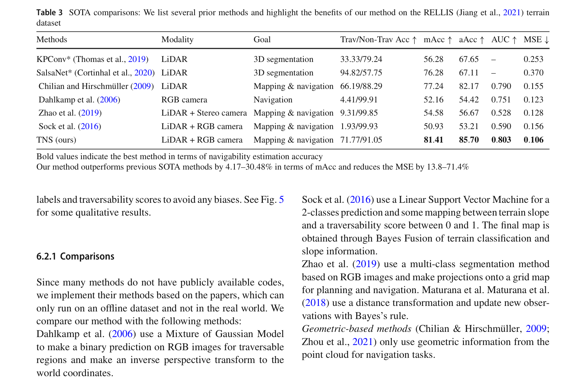
원문 Table 3 · PDF p.10 — Table 3 SOTA comparisons: We list several prior methods and highlight the benefits of our method on the RELLIS (Jiang et al., 2021) terrain dataset
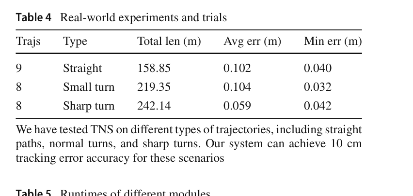
원문 Table 4 · PDF p.12 — Table 4 Real-world experiments and trials
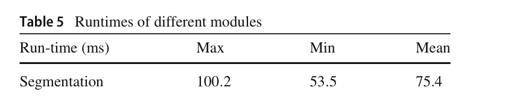
원문 Table 5 · PDF p.12 — Table 5 Runtimes of different modules
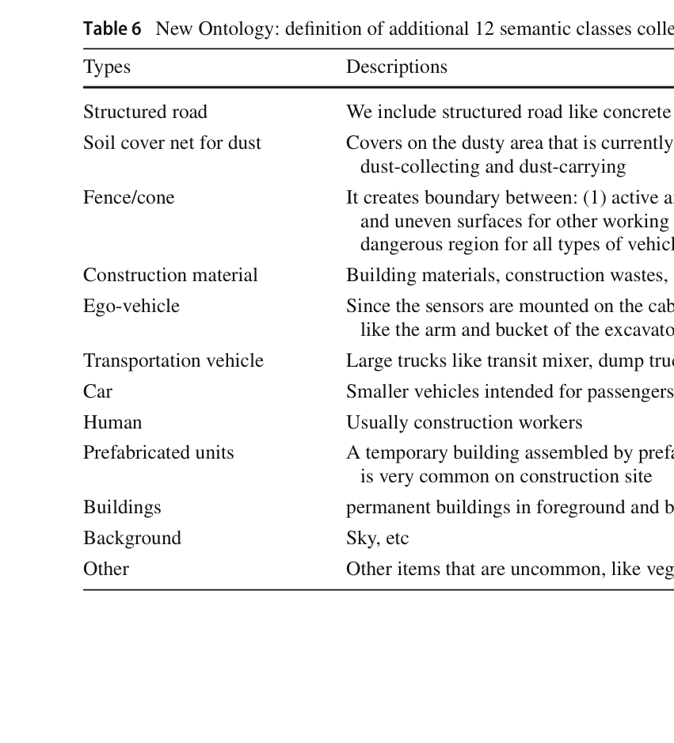
원문 Table 6 · PDF p.15 — Table 6 New Ontology: definition of additional 12 semantic classes collected on the new worksite